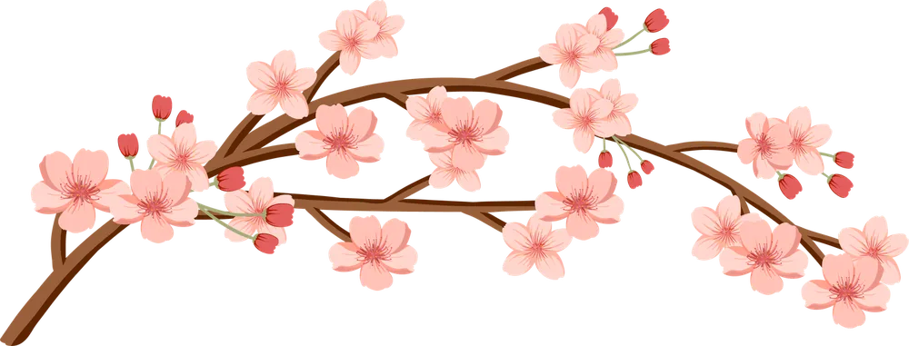
A bite-sized, poke-able tour of how Korea eats: the table, the manners, the classics and what's cooking now.
Every everyday table follows the same pattern. Tap the dots on the table to set your meal.
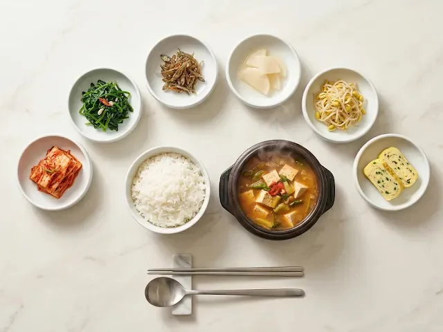
Find all four parts of the meal.
Source: [1]
Tap a card to flip it.
Korean royalty once used silver utensils, believing they could detect poison.
Metal is easy to clean and doesn't easily absorb food odours.
Stainless steel chopsticks are strong, reusable and long-lasting.
Korean chopsticks are typically flat and made of metal. Their neighbours' aren't.
Source: [2]
Four moments at the table. Tap a step to open it, and press play to hear the phrase.
Wait for the elders to start eating, then say:
Keep your rice and soup bowls on the table. Don't lift them.
Pour drinks for elders using both hands. Turn your head slightly away when drinking in front of elders.
Show your thanks:
Source: [3]
Pick a plate. Each one has something to play with.
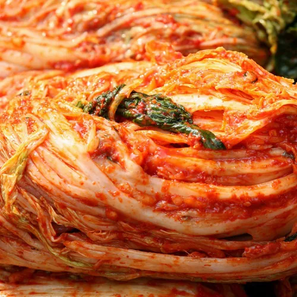
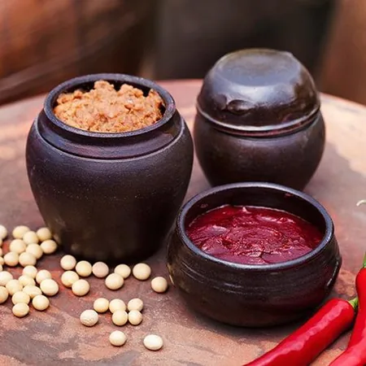
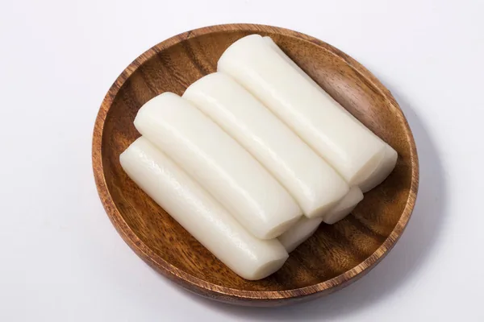
GaraetteokGaraetteokLong, cylinder-shaped rice cake. Plain, chewy and very versatile.
InjeolmiGlutinous rice cake coated in roasted soybean powder.
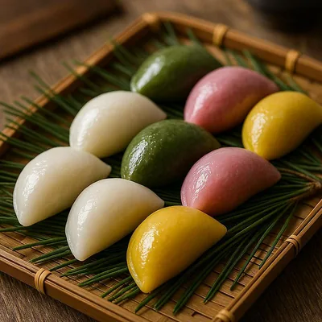
SongpyeonSongpyeonHalf-moon rice cakes made for Chuseok.
TteokbokkiRice cakes in a sweet and spicy gochujang sauce.
Tap a rice cake to flip it
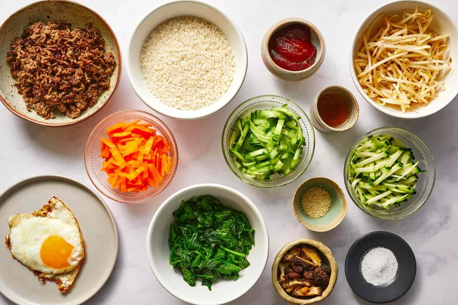
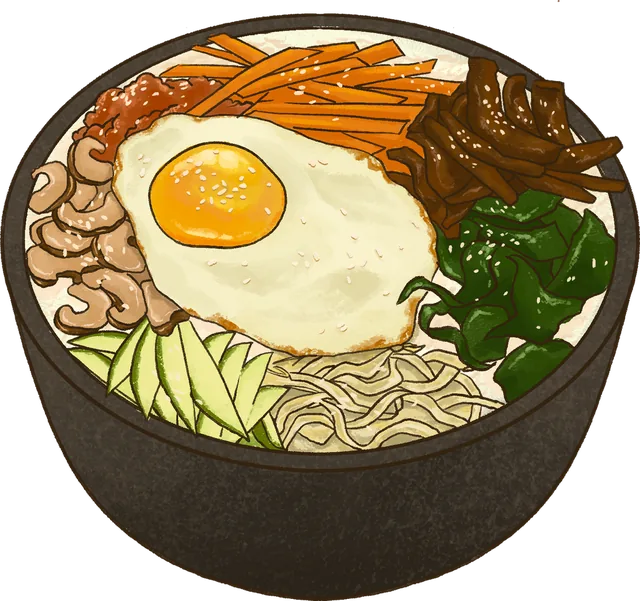
Source: [4]
Source: [5]
Source: [6]
Rice-cake soup eaten at the Lunar New Year.
Symbol of a new year beginning, and of growing a year older.
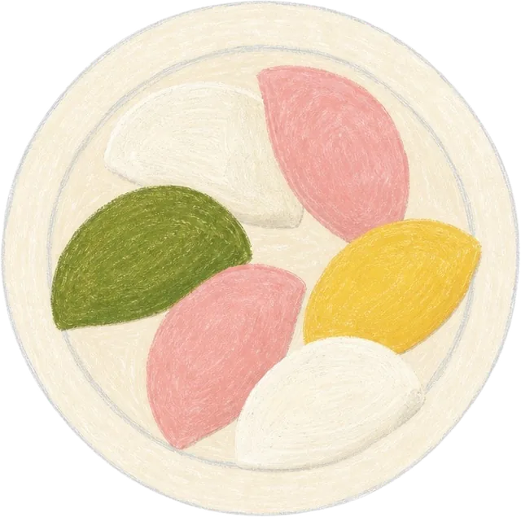
Half-moon rice cakes shared at the autumn harvest festival.
Gratitude for the harvest and wishes for good fortune.
Source: [4]
Source: [7]
Tap the dish (or a friend) to share a bite
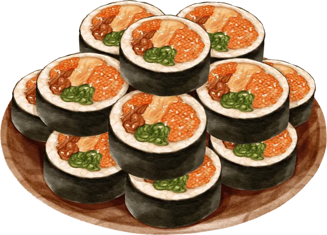
Traditional food culture emphasises shared meals, family gatherings and banchan. Modern lifestyles have shifted towards individual dining, takeaway and convenience. Globalisation and technology have changed how food is prepared and experienced, while traditional dishes keep evolving through modern interpretations and fusion cuisine.
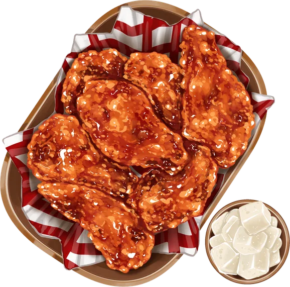
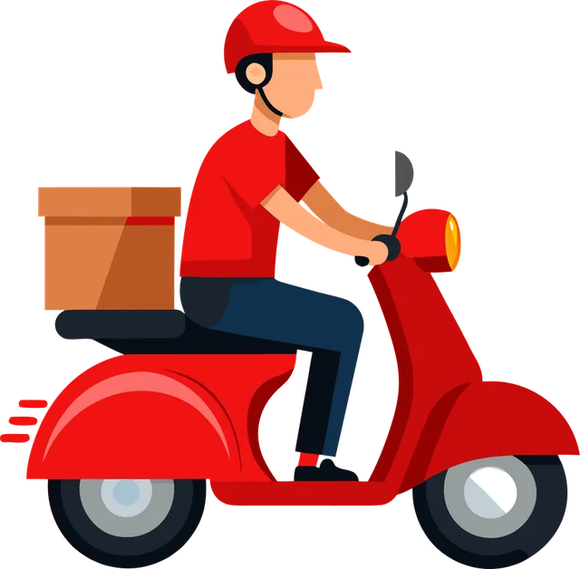
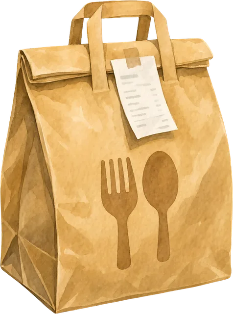
Source: [8]
Source: [9]
Source: [10]
Korean food's rise around the world is strongly influenced by the Korean Wave. Tap one to give it some love. Likes from everyone who visits add up.
Music videos, idols and celebrity food recommendations introduce Korean dishes to international audiences.
Scenes featuring ramyeon, Korean BBQ and fried chicken encourage viewers to try Korean food.
TikTok, YouTube and Instagram spread food trends through mukbang, food reviews and cooking videos.
International visitors are increasingly interested in experiencing Korean food firsthand.
Online eating broadcasts originating in South Korea, where creators eat and interact with viewers.
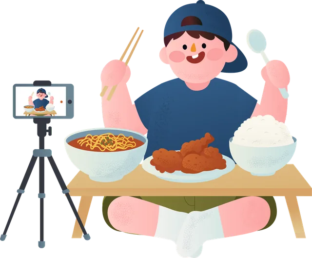
Korean food culture reflects a balance between tradition and modern lifestyles.
Traditional foods and customs preserve Korea's cultural identity and heritage.
Street food, fusion cuisine, delivery and mukbang make Korean food more accessible and globally popular.
Food remains an important way to express affection, strengthen relationships and bring people together.
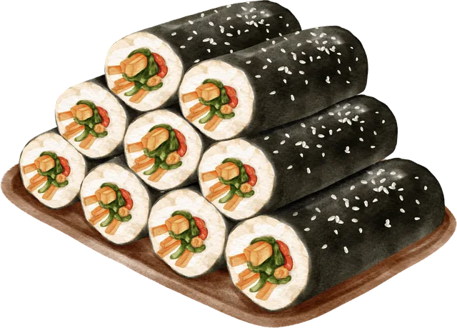
Every Korean word we used, in one place. Tap a card to hear it.
Romanised the way most English speakers spell them; the official Revised Romanization is in brackets where it differs.
Most of our planning happened in our group chat. Open a photo to read why it mattered.
We didn’t have many rehearsals or in-person discussions, but we kept talking in our WhatsApp chat. Here’s our presentation. Enjoy!
The 23 slides we presented, made in Canva. Download the PDF, or flip through them below.
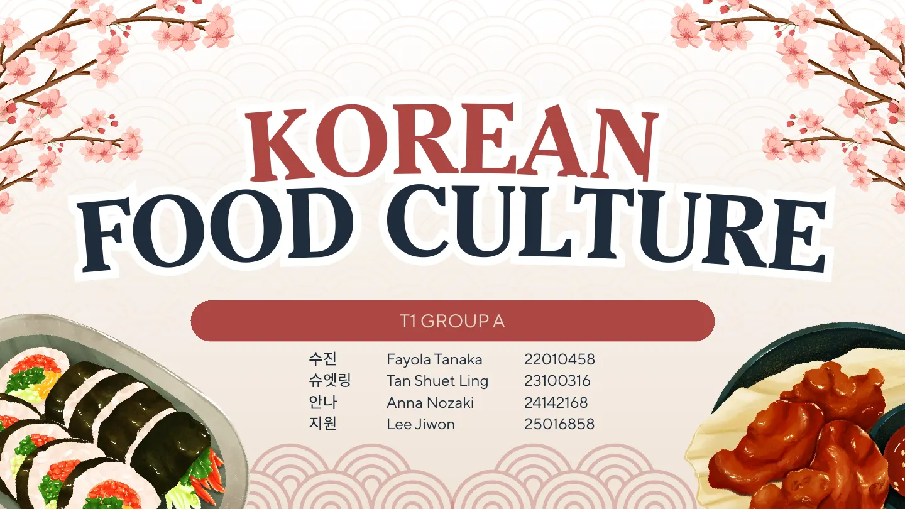
Sources for the facts on this site. Numbers in the “Dig deeper” boxes point here. Websites accessed November 2026.